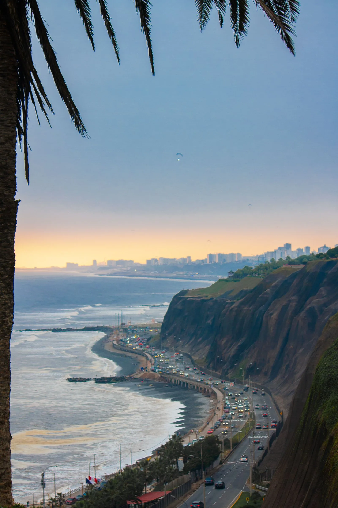
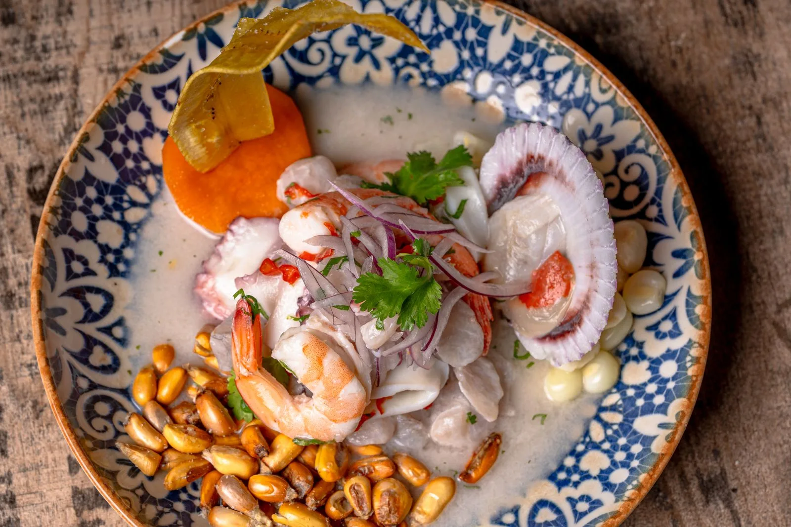
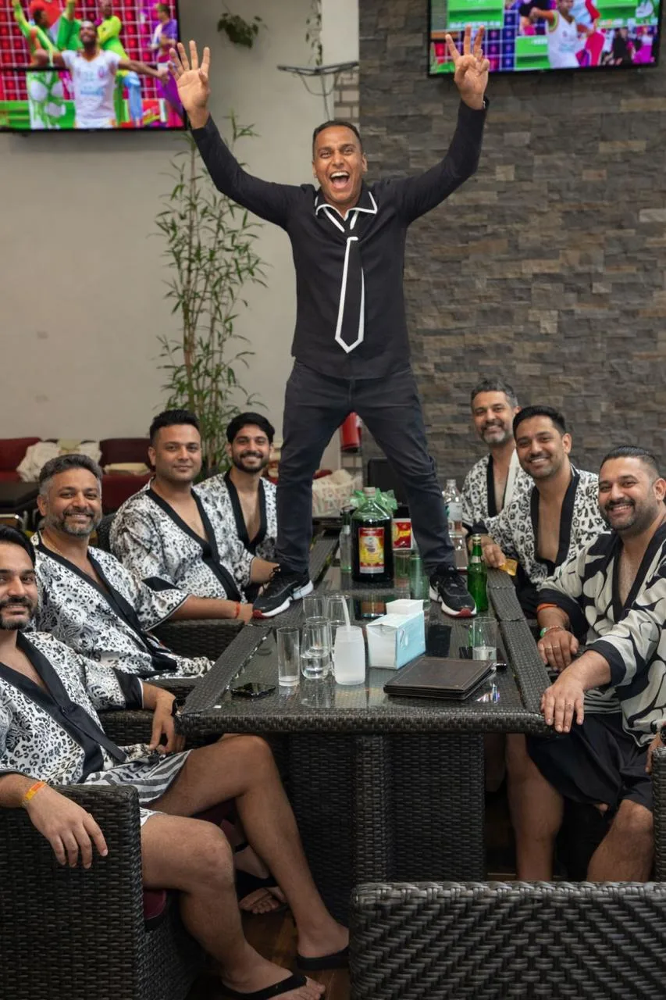

Airport arrival
Private pickup and straightforward coordination before you land.
Food, neighborhoods, coast, and local connection
Private support for airport arrival, personalized days, restaurants, nightlife, and groups—all coordinated directly with Fidel.


A personal way to plan
Private pickup and straightforward coordination before you land.
A private experience shaped around your time, interests, and pace.
Support with transportation, restaurants, nightlife, and practical logistics.

Meet your local contact
Speak with Fidel directly before your trip and while you are in Lima. No booking platform sits between you and the person helping.
Message Fidel